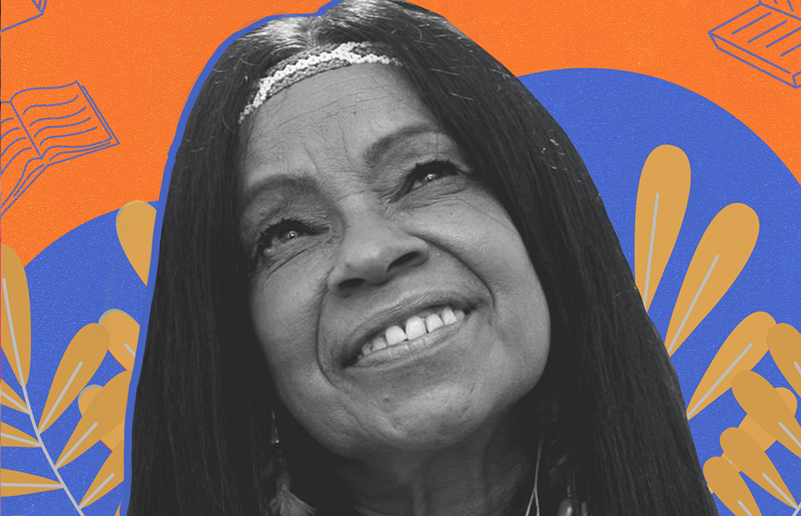

IMPORTÂNCIA DE ELIANE POTIGUARA
Eliane Potiguara é uma figura importância na luta pelos direitos indígenas e na preservação da cultura e identidade dos povos originários no Brasil. Sua trajetória é descrita por uma grande dedicação à justiça social, à educação, e à valorização da sabedoria ancestral. Durante sua vida, não apenas fundou o GRUMIN, a primeira organização de mulheres indígenas no país, mas também desempenhou um papel essencial na elaboração da "Declaração Universal dos Direitos Indígenas" na ONU, promovendo a conscientização global sobre os desafios enfrentados pelas comunidades indígenas.
Sua produção literária é um testemunho da riqueza cultural dos povos indígenas e de como a narrativa pode ser um poderoso meio de resistência e resiliência. Livros como "Metade Cara, Metade Máscara", "A Terra é a Mãe do Índio", e suas obras infantis, como "O Coco Que Guardava a Noite", transmitem as histórias, tradições e valores que integram a base da identidade indígena.
Eliane demonstra que contar histórias é também uma forma de resistência. Sua voz surge como uma luz de esperança em um mundo marcado por exclusão social e racial. Ela levanta questões como ancestralidade, o papel essencial das mulheres indígenas e a importância da terra como fonte de vida e identidade. Sua luta mostra o desejo de reconectar com a natureza, respeitar a diversidade cultural e defender a justiça, sendo um ótimo exemplo de liderança, compromisso e resiliência.
FRASES MARCANTES
"Mulheres! Não percamos nossas almas! A criação é o nosso poder: Escreva, dance, componha, plante, ame, ore, estude, pinte, cozinhe, capine, palestre, espiritualize-se, defenda a Terra, cuide-se, cuide dos animais, crianças, velhos e velhas, acaricie o mundo, beije as cicatrizes do mundo, cultive relações, cultive os amigos, cultive a família, enfim, seja... Esteja presente! Seja luz!"
"A mulher que ouve a sua intuição, que percebe os seu sonhos, que ouve a voz interior das velhas e das mulheres guerreiras de sua ancestralidade e que possui o olhar suspeito dos desconfiados, essa sim, é uma ameaça ao predador natural da história e da cultura."
"A coisa mais bonita que temos dentro de nós mesmos é a dignidade. Mesmo se ela está maltratada. Mas não há dor ou tristeza que o vento ou o mar não apaguem...Bonito é florir no meio dos ensinamentos impostos pelo poder. Bonito é florir no meio do ódio, da inveja, da mentira ou do lixo da sociedade..."
POESIAS
BRASIL
Que faço com a minha cara de índia?
E meus cabelos
E minhas rugas
E minha história
E meus segredos?
Que faço com a minha cara de índia?
E meus espíritos
E minha força
E meu Tupã
E meus círculos?
Que faço com a minha cara de índia?
E meu Toré
E meu sagrado
E meus "cabôcos"
E minha Terra
Que faço com a minha cara de índia ?
E meu sangue
E minha consciência
E minha luta
E nossos filhos?
Brasil, o que faço com a minha cara de índia?
Não sou violência
Ou estupro
Eu sou história
Eu sou cunhã
Barriga brasileira
Ventre sagrado
Povo brasileiro
Ventre que gerou
O povo brasileiro
Hoje está só ...
A barriga da mãe fecunda
E os cânticos que outrora cantavam
Hoje são gritos de guerra
Contra o massacre imundo
ATO DE AMOR ENTRE POVOS
BOCA VERMELHA, guerreiro das cordilheiras
cansado... Repousava adormecido sob o orvalho.
Abriram-lhe os olhos rubros raios solares,
aromas silvestres, canções da mata.
Era Cunhataí - trêmula - errante das águas,
Envolta em folhagens, flores mas sem abrigo...
Cantou-lhe em voz alta e compassada,
uma canção de amor... Mas sem destino:
(porém ele nada dizia e tudo entendia)
- Desperta JURUPIRANGA !
Vem me ver que hoje acordei suada.
Benzo
com o sumo de minha rosa aberta, enamorada,
as manhãs de delírio, completamente cansada
Vem, que te sonhei a noite toda:
Puro, te revelando nas águas do Orenoco,
Sorrateiro, espreitando o massacre de Potosi
Vem, que te sonhei na noite pela PAZ
E teus dedos velozes, a guarânia, tocavam
as vitórias felizes do Império Inca.
Teu rosto estranhava a luz que me envolvia,
porque - recuperado - todo o estanho eu trazia.
Vem, que vou me pintar com urucum
Vou me encher de mil colares
pra te esperar pro ritual
Tenso
está meu corpo ofegante e
penso
no teu cheiro de homem,
no teu corpo de homem,
que me assanha e me esquenta.
Me senta a teu lado,
me toca c’oas mãos
poéticas, tão grandes e musicais
Me espera na hermosa Ponta Porã
E faz tua amante se sentir cunhã
Me roça
Me faz a palhoça
pra eu morar.
Me afoga em teus beijos,
teus quentes desejos
pra que eu veja
um pituã pra nos cantar
Me traz os teus cânticos
Me grita aos ouvidos
compõe a cantiga
que me faz tua AMIGA...
E te deitas em meu colo
que eu toda me enrolo
em teus cabelos românticos
Me aponta teus ventos brabos
de um país roubado,
de tanto sangue derramado,
chamando um xaxado
pro gozo de amar
Que vou bebendo
com muita cadência
o fogo que expele do teu olhar
E nesse momento teus beijos ardentes
explodem contentes
queimando meus lábios,
meus tão fartos lábios
que te fazem delirar
Ah!... Me traz teus quenachos
Pra que eu te dê meus penachos
Assim... Vou-te levando aos Tabajaras
Lá, dormiremos ao som das araras
testemunhando o amor, a oiticica sagrada.
E ungiremos com óleo todas as nossas feridas
Então, tomaremos o mel da manhã
pra que todos os antepassados renasçam
E olharemos pro céu do amanhã
pra que nossos filhos se elevem
e beberemos a água do carimã
pra suportar a dor da Nação acabada
E os POTIGUARAS, comedores de camarão
que HOJE - carentes
nos recomendarão a Tupã.
E te darão o anel do guerreiro - parceiro
E a mim?
Me darão a honra do Nome
A ESPERANÇA - meu homem!
De uma pátria sem fim
agora, chamego!
me cheira,
me faz um churrasco,
me dá chimarrão,
uma saia de chita,
mais um chocalho bonito
pra Zamacueca dos Andes
pro Toré do Sertão
Reparte essa carne-de-sol,
esse baião temperado
que eu tô danada assim...
de amor por esse diabo.
Me dá açaí geladinho
uma rede quentinha
pra nos sonhar agarrados
nas libertas Ilhas Galápagos
Mas Zanzo,
zonza,
ao som do zabumba
ao som das zampoñas,
sob o azul do Amazonas
Benzendo teu coração
Mas chora teu charango latino
tua lhama andina, pelos cantos da cidade,
pelas cidades sem flor
Chora meu ximango sofrido
Porque estou triste aqui.
E juntos, num só instante,
depois de tanto amor incessante
perceberemos INQUIETOS aqui,
o JURUPARIPINDÁ
a separar a todos os loucos Amantes.

FANTASIAS DESERTAS
Não tenhas medo, IANUÍ
Que não vou-te enfeitiçar
O nada, eu quero de ti
Pro nada talvez vou partir.
Poema de Amor ?
Sei lá... se poema de amor !...
Só sei que me passa essa chama
E que me queima a alma errante.
Horas, mas dias, mil noites
Relembro teu corpo parado
Feito máscara imóvel ao vento
Doido a flutuar nos mares quentes.
Pássaro louco bicando os peixes
Engorda teu peito aberto
Inflama teu coração militante
É tua, essa paixão dos séculos
Mas te guardas feito tatu
Que não é chegada a hora
Enfia teus dedos na terra
Desafoga as dores nela!
Mira pros céus navegantes
De teu barco em flor e vela
E rouba todas as forças solares
E renasce Boto, amante, mais belo.
Engorda teu peito aberto
Aquece o coração nu noutras eras
Alimenta tuas veias em asas
Nas fantasias desertas
Corre pelos cajueiros e arrozais
Que te trago essa cana caiana
E outras limas pra melar nossas bocas
E relaxar no calor das manhãs
Eu não te quero mais puro
Entrega-te que te vejo criança
Amor pronto a explodir
Fogo eterno, quem sabe?...
Ou vou partir, antes mesmo de vir
Num calor aberto semente...
Numa ilusão e sonho somente...
Nessa estrada longa, errante
Sendo meu caminho tão farto
Sendo teu peito tão forte

CRIADOR, A IDENTIDADE E O GUERREIRO
Escorria-me das veias doentes
Um sangue ainda quente
Como percorre as águas do Norte
Levando pra bem longe
As ervas daninhas
Onde estavas identidade adormecida ?
Sofrida nas noites ensangüentadas
Anestesiada ou morta
Ou apenas me contemplando
Ao pé da porta?
Mirava-me calada, identidade amiga
Mas vieste a mim, pelas mãos do Criador
Fruto das atenções da luta
De suas mãos solares
De olhares ternos e carinhos puros
Quem tu és identidade?
Que secretos poderes tens,
Que me matas ou me revives
Que me faz sofrer ou me faz calar
Quão mistérios tu trazes na alma?
E quem é você doce guerreiro salvador das vidas?
Por quantos sangues lutou para estancar
Quantos curumins fez brotar
Doce amante de mil formas a me encantar
Vamo-nos embora - nós três - agora
Tu, eu e a identidade caminhante
Só que cada um pro seu lado
Porque minha identidade pra renascer
A qualquer instante
Basta um fio de luz
Uma gota mínima de tolerância
Ou uma esperança em seu semblante.
Porque só um fogo eterno
O útero de meus avós
Pra tornar minha cidadania decente.

ORAÇÃO PELA LIBERTAÇÃO DOS POVOS INDÍGENAS
Parem de podar as minhas folhas e tirar a minha enxada
Basta de afogar as minhas crenças e torar minha raiz.
Cessem de arrancar os meus pulmões e sufocar minha razão
Chega de matar minhas cantigas e calar a minha voz.
Não se seca a raiz de quem tem sementes
Espalhadas pela terra pra brotar.
Não se apaga dos avós - rica memória
Veia ancestral: rituais pra se lembrar
Não se aparam largas asas
Que o céu é liberdade
E a fé é encontrá-la.
Rogai por nós, meu pai-Xamã
Pra que o espírito ruim da mata
Não provoque a fraqueza, a miséria e a morte.
Rogai por nós - terra nossa mãe
Pra que essas roupas rotas
E esses homens maus
Se acabem ao toque dos maracás.
Afastai-nos das desgraças, da cachaça e da discórdia,
Ajudai a unidade entre as nações.
Alumiai homens, mulheres e crianças,
Apagai entre os fortes a inveja e a ingratidão.
Dai-nos luz, fé, a vida nas pajelanças,
Evitai, Ó Tupã, a violência e a matança.
Num lugar sagrado junto ao igarapé.
Nas noites de lua cheia, ó MARÇAL, chamai
Os espíritos das rochas pra dançarmos o Toré.
Trazei-nos nas festas da mandioca e pajés
Uma resistência de vida
Após bebermos nossa chicha com fé.
Rogai por nós, ave-dos-céus
Pra que venham onças, caititus, siriemas e capivaras
Cingir rios Juruena, São Francisco ou Paraná.
Cingir até os mares do Atlântico
Porque pacíficos somos, no entanto.
Mostrai nosso caminho feito boto
Alumiai pro futuro nossa estrela.
Ajudai a tocar as flautas mágicas
Pra vos cantar uma cantiga de oferenda
Ou dançar num ritual Iamaká.
Rogai por nós, Ave-Xamã
No Nordeste, no Sul toda manhã.
No Amazonas, agreste ou no coração da cunhã.
Rogai por nós, araras, pintados ou tatus,
Vinde em nosso encontro
Meu Deus, NHENDIRU !
Fazei feliz nossa mintã
Que de barrigas índias vão renascer.
Dai-nos cada dia de esperança
Porque só pedimos terra e paz
Pra nossas pobres - essa ricas crianças.
Nhendiru: Deus
Mintã: criança
Boto: mamífero marítimo que mostra o caminho
REFERÊNCIAS BIBLIOGRÁFICAS
- ELIANE POTIGUARA. Eliane Potiguara - Escritora e Ativista. Disponível em: http://www.elianepotiguara.org.br/. Acesso em: 17 set. 2024.
- LOJA MOINÁ PRODUÇÕES. O Coco que Guardava a Noite. Disponível em: https://www.loja.moinaproducoes.com.br/6fabc/o-coco-que-guardava-a-noite-eliane-potiguara. Acesso em: 17 set. 2024.
- LOJA MOINÁ PRODUÇÕES. Metade Cara, Metade Máscara – 3ª Edição. Disponível em: https://www.loja.moinaproducoes.com.br/1dd944/metade-cara-metade-mascara-3-edicao-eliane-potiguara. Acesso em: 17 set. 2024.
- LOJA MOINÁ PRODUÇÕES. O Vento Espalha Minha Voz Originária – 1ª Edição. Disponível em: https://www.loja.moinaproducoes.com.br/20bcb0/o-vento-espalha-minha-voz-originaria-1-edicao-eliane-potiguara. Acesso em: 17 set. 2024.
- SKOOB. A Terra é a Mãe do Índio. Disponível em: https://www.skoob.com.br/a-terra-e-a-mae-do-indio-769922ed774079.html. Acesso em: 17 set. 2024.
- AMAZON. Cura da Terra. Disponível em: https://www.amazon.com.br/Cura-Terra-Eliane-Potiguara/dp/8510058016. Acesso em: 17 set. 2024.
- QUINDIM. O Pássaro Encantado. Disponível em: https://quindim.com.br/selecoes/livro/o-passaro-encantado/eliane-potiguara/9788561695538. Acesso em: 17 set. 2024.
- AMAZON. Conhori: as Icamiabas, Guerreiras da Amazônia. Disponível em: https://www.amazon.com.br/Conhori-as-Icamiabas-guerreiras-Amaz%C3%B4nia/dp/8510094276. Acesso em: 17 set. 2024.
- UFRB. Celebrando a Literatura Feminina: Eliane Potiguara, Guardiã das Tradições Indígenas. Disponível em: https://www.ufrb.edu.br/bibliotecacecult/noticias/388-celebrando-a-literatura-feminina-eliane-potiguara-guardia-das-tradicoes-indigenas. Acesso em: 17 set. 2024.
- TURMA DA MÔNICA. Eliane Potiguara: Perfil. Disponível em: https://turmadamonica.uol.com.br/donasdarua/perfil/elianepotiguara/. Acesso em: 17 set. 2024.
- PENSADOR. Frases de Eliane Potiguara. Disponível em: https://www.pensador.com/autor/eliane_potiguara/. Acesso em: 17 set. 2024.
- SOCIEDADE DOS POETAS AMIGOS. Eliane Potiguara: Escritora, Poeta e Ativista Indígena. Disponível em: https://sociedadedospoetasamigos.blogspot.com/2012/04/eliane-potiguara-escritora-poeta-e.html. Acesso em: 17 set. 2024.
- WIKIPÉDIA. Eliane Potiguara. Disponível em: https://pt.wikipedia.org/wiki/Eliane_Potiguara. Acesso em: 17 set. 2024.